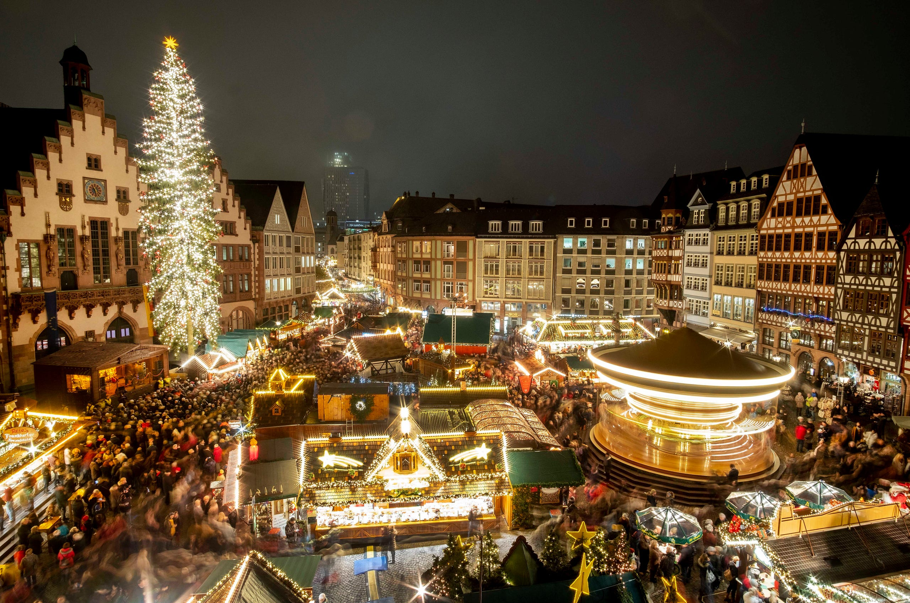

Willkommen to a very German Christmas!
Come explore the Christmas Markets in Berlin!
Nothing says Christmas in Germany quite like the charming, quintessential Christmas markets that decorate the country during this magical time of year.
Whether you choose to browse the most popular ones or those hidden in some quaint, lesser-known medieval villages, one thing is for sure: visiting a Christkindlmarkt is the ultimate holiday experience! Find a Market near you!
Data Sources & Tools:
- QGIS 3.14
- Mapbox
- Python Libraries: Pandas & GeoPandas
- Berlin Open Data
- Berlin Polygon Data
- Project repository

The Berlin Market
Sponsered by: Humboldt University in Berlin